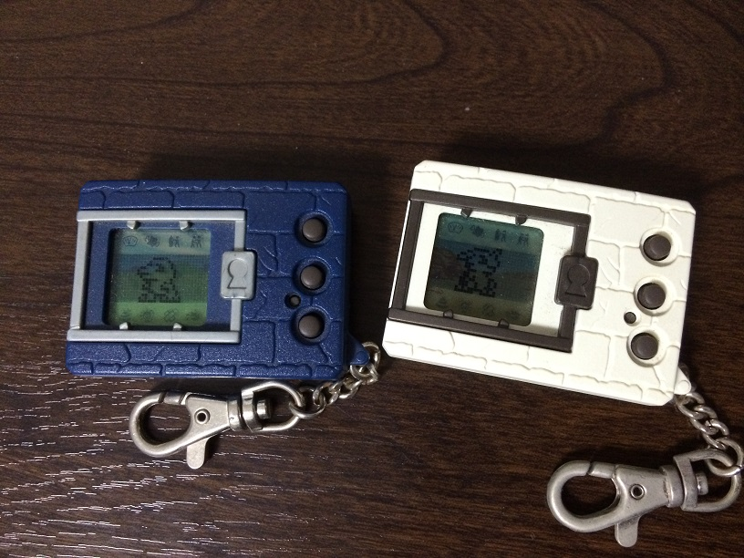
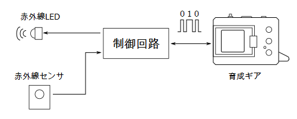
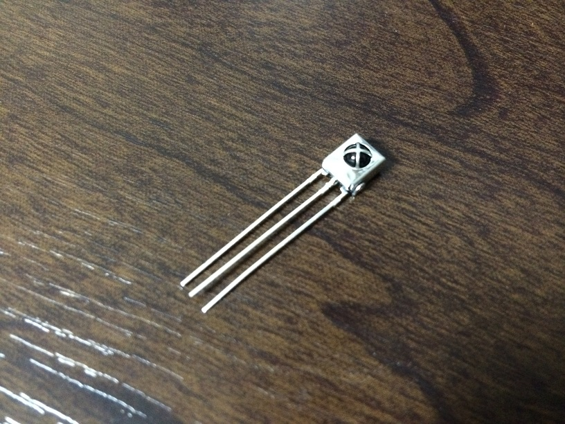
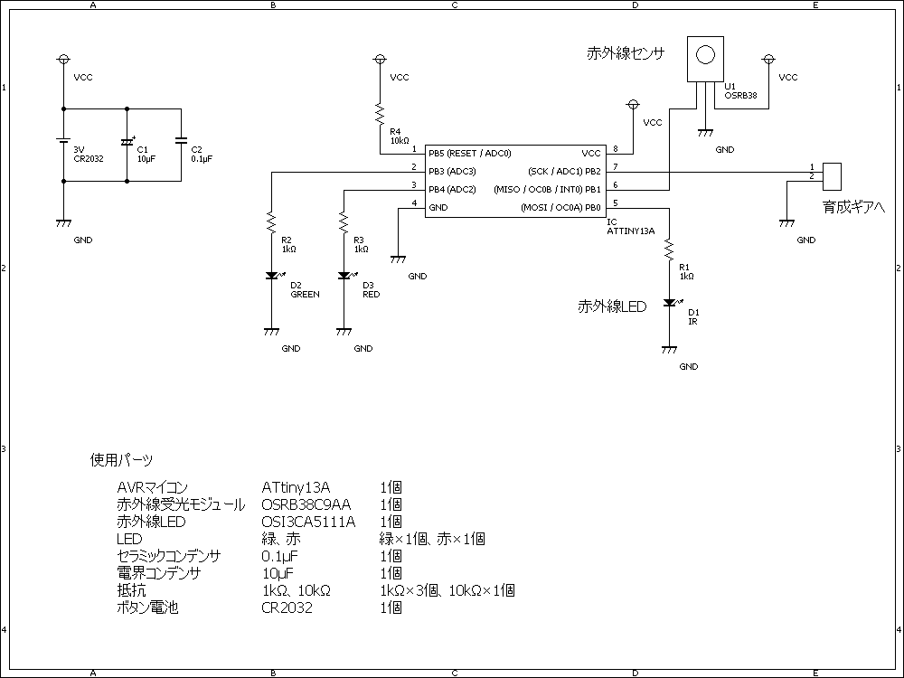
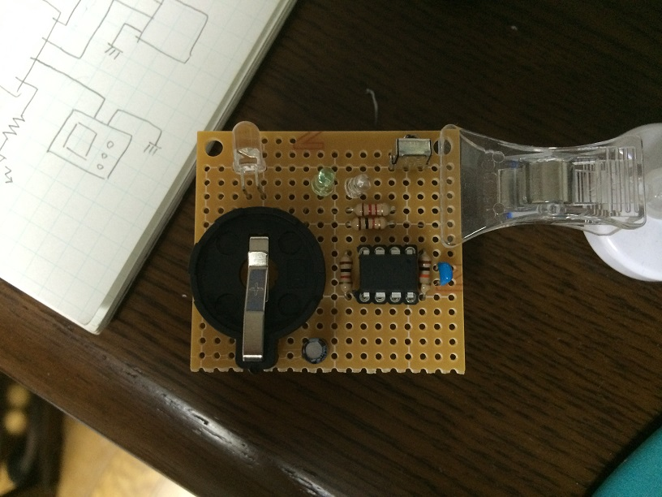
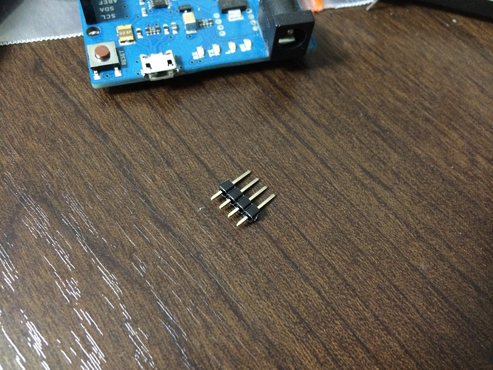
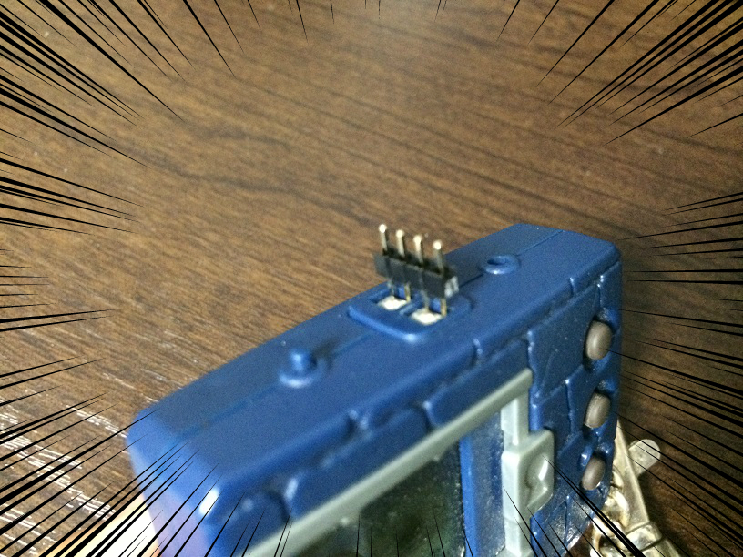
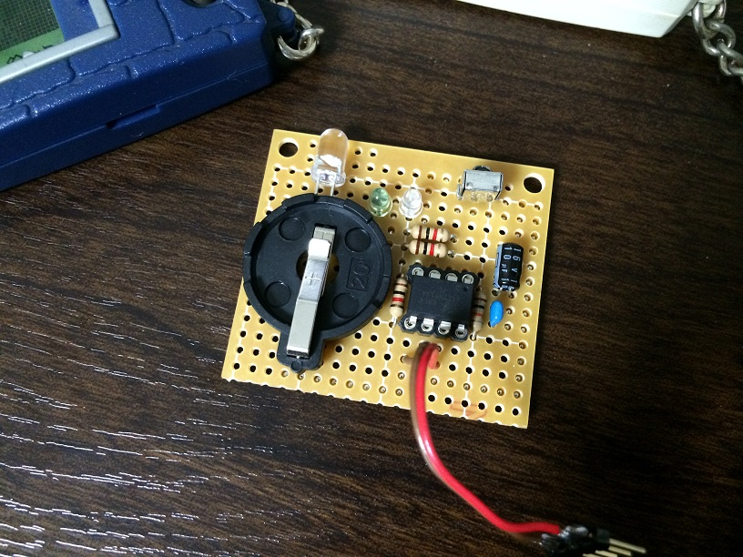

初代デジタルモンスターの無線化回路
記事作成 : 2014/9/15(月)
はじめに
育成ギアの通信を解析した結果、今のところ、ビット情報はパルス幅の長さで送られること、フレームは交互に送信されること、 パルス幅は短いところでも1ミリ秒と、だいぶ速度が遅いということが分かりました。 データの中身はまだ完全には分かっていませんが、「この信号をそのまま無線で飛ばせば無線通信ができるんじゃなかろうか？」 と思ったので実際にやってみることにしました。
設計
アイディアはいたって単純です。 育成ギアの信号を赤外線LEDで飛ばし、それを赤外線センサで受信することで通信を無線化します。
知っての通り、育成ギアやデジヴァイス系の玩具はコネクタが2つしかありません。 その内の1つはGNDなので、信号線は実質1本だけです。 この1本を無線化するだけなので、LEDとセンサは1対で済み、赤外線の干渉なんかも気にする必要はありません。
回路の大まかなイメージは下のような感じです。
赤外線センサは秋月電子で売ってる一般的な受信モジュールを使用します。 このモジュールは38kHzでON/OFFを繰り返す赤外線にのみ反応して出力がLowとなります。
しかし、データシートによれば、この受信モジュールは38kHzの赤外線信号を受信しても、連続的に出力がLowになる時間は400〜800マイクロ秒しかないようです。 育成ギアの通信では最長で60ミリ秒ほど連続的にONになってもらわなければなりません。
実際のところ、どのくらいの時間Lowになる時間が継続するか実験してみた結果、しばらく信号を受信しなかった場合、 最初の2秒間くらいは連続的にLowを出力することができることが分かりました。 それ以降は、38kHzの信号を送り続けても数ミリ秒間隔で出力がHighになってしまうようです。 それでも5ミリ秒以上はLowを出力し続けることができるみたいです。 育成ギアの通信では最長で3ミリ秒ほどLowを出力できれば通信できるので一応何とかなりそうです。
制御回路にはAVRマイコンを使用することにしました。 ロジック回路だけでも作れそうではありますが、コストを考えればマイコンの方が安くて済みます。 また、後から修正を行えるという面でもマイコンの方が優れています。 今回はAVRマイコンのAttiny13Aを使用します。 理由は秋月電子で最も安かったからです。 作成する回路の回路図を下に示します。
電源はボタン電池(CR2032)を使用します。 育成ギアの電源を引っぱってきて使う方法もありましたが、それでは育成ギアの電池寿命が減ってしまいますからね。 できる限り液晶ゲーム本体には影響を及ぼさないように配慮しました。 それと、確認用に通信状況を示すためのLEDを追加しました。
回路作成
回路の設計が完了したので、実際に回路を制作していきます。 ユニバーサル基板に部品をならべ、どのように配置するか考えます。 今回はほとんど部品が無いので秋月で売ってる一番小さい基板でも余りが出てしまいました。 そこで、この基板を2つに割って使用することにしました。 下の写真は、どのように配線するか考えるために基板に一時的に部品を配置した様子です。
まだけっこう基板に余裕がありますが、とりあえずこれで制作します。
育成ギアと自作回路をどうやって接続するか、という問題は、サンドバッグを作成するにいたって避けて通ることはできません。 しかし、運の良いことに下の写真のピンヘッダが育成ギアの2端子コネクタにジャストフィットしました。
ピンヘッダの反対側に動線をハンダ付けすることで自作回路と育成ギアを接続するケーブルが作れそうです。
最終的に完成した回路を下の写真に示します。
最後にマイコンのプログラムを作成したいと思います。 プログラムといってもやることは、育成ギアからの信号を38kHzにして赤外線LEDを点滅させることと、赤外線センサの信号を育成ギアに伝える程度です。 一応、通信の開始と終了は電圧が不安定になるみたいなので遅延を入れています。
[ダウンロード]
動作確認
回路を作成したので、いよいよ動作実験を行います。 2つの無線化回路をそれぞれ育成ギアに接続し、バトルを行いました。 そのときの様子が下の動画です。
ちゃんと無線通信ができてることが確認できました!
通信距離については、1mくらいは余裕で可能みたいです。 実際は50cmほどあれば十分で、それ以上は電力の無駄ですし、複数で通信する場合に干渉してしまう危険性が高まってしまうのですが、 今回はそこらへんは全然気にしてなかったので今後調整する必要がありそうです。 ちなみに、今回は初代育成ギアで実験を行っていますが、波形をそのまま送信しているだけで、フレームの内容には影響がないので、 ペンデュラムでも問題なく通信できると思います。
Tweet